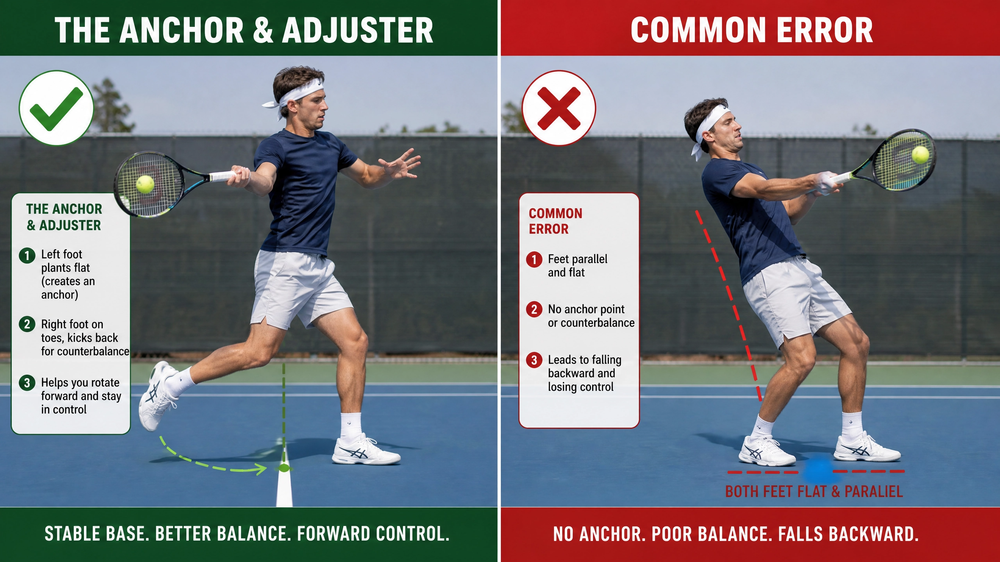

🏠 Home › Fundamentals › Footwork › Tennis Footwork Tip: The 4 Movement Zones
Ean (Tennis Evolution)
Video Capture: Tennis Footwork Tip: The 4 Movement Zones — Ean (Tennis Evolution)

After covering ready and read in the first two videos we now move on to the third part in the five R's of movement and that is the react part. Do the four different movements zones and how you should move into each zone? Each zone requires different movement patterns and getting this right is how the best players in the world make their movement look so effortless! In today's video Ean will explain basic concepts about the four different movements zones and then.
He'll show you in detail how you can practice efficient movement in the rhythmical zone. Let's go out to the court and get started! Okay that brings us to the react part of the movement module. So when you start to the ball you need to of course know where you're reacting to that's why understanding or anticipating where the ball is going to bounce is so critical! That's the first thing. That's what you saw me doing in the previous video but that's critical because it determines what type.
Of footwork you're going to use. So as reaction to the ball you have to understand that the court is divided into different areas. Sometimes you have to move laterally, sometimes you have to move diagonally, sometimes you have to move back in different directions. As far as movement laterally I put the cones out here for you can see we divide the court up in 4 different movement areas. So if from the middle of the court this cone here would.
Represent the 'step out area' or 'the step out zone'. The step out movement zone. Now against good players you don't really get too many balls in your step out zone. Good players will try to get you into the other areas. They're not going to keep the ball or hit the ball down the middle of the court but it happens! It happens so you need to understand that if a ball is in your step out zone, it's a simple step out to get behind the ball. If a ball comes in this area if a ball.
Comes over this cone, now we're moving into what we call a 'rhythmical zone'. Okay so the rhythm zone is critical because you don't really want to cross your feet over to that area. You want to keep your feet apart so the it's very important that you understand that's why we showed you all these drills about how to respect your base. If you don't need to move your feet together or cross them over you want to avoid that at all costs! You want.
To keep your feet apart and try to respect your base! Of course the opponent is not going to always allow you to do that. The opponent is going to try to run you to cross over and bring your feet together. The opponent wants you to be off balance. So when you're moving to a rhythmical zone then it's a simple double rhythm action. So if you watch my feet here! As I land on my outside leg I simply go double rhythm to the right. Can you see? It's not this kind of thing, it's not this kind of thing.
It's definitely not this kind of thing when I'm moving into this zone. Now when the ball starts to go beyond my rhythmical zone here! Then of course I cannot shuffle anymore, I cannot use rhythm steps to that cone because it's going to take forever! So that zone we call the 'crossover zone' but basically what it means is if I'm in the middle of the court I'm now going to start to turn my feet and drive a cross to this cone. Rhythm steps will not.
Get me there anymore so I have to make a pivot here push against the ground and drive to that cone. Alright now if I have to go beyond that then of course now it becomes a sprint right so that's why we call that the running zone and the most effective way run somewhere is of course to do a 'drop step'. So if you watch me carefully I'm going to start in a fairly wide base I'm going to split step in a wide base this foot it's going to drop under my body! You see so I pull this.
Foot under my body to give myself almost like creating a starting block here right on the ball of my foot so I can start this sprint to the ball that's far away! Let's look at the rhythmical zone next! If you remember the step out.
Zone was here the rhythmical zone was the next one. Rhythmical zone in different directions. I think no matter what level you play especially as recreational players you want to definitely learn rhythm steps. Rhythm steps are key to good movement and comfort zone why because the rhythm steps will give you a fixed center of gravity. Remember I talked about the importance of establishing and maintaining your base and the only way to really do that in a comfort zone is by using rhythm steps.
Not the type of rhythm step that will bring your feet together but the kind of rhythm step that we spoke about before, the one that's going to maintain that base. The shorter steps that will maintain establish and maintain that balance base between your feet. So if I have to the right, Notice how I move my feet out to this ball, I move in rhythm steps and I get my foot on the inside of the ball but you don't really see this kind of thing.
And you don't see this kind of thing. I simply push my leg out and this foot just follows and notice it doesn't follow the toe! I hear a lot of coaches teaching that toe to the heel...NO! This one actually follows in front so I can get more into a semi-open or later even in neutral stance but if I need to move back the same thing. I land on my left foot like we decided and I shuffle back in rhythm steps this way. If I need to this ball I move in rhythm steps.
This way if I need to move forth I land and I'm moving in rhythm steps this way. If I need to the back end I land on my left foot and I move in choppy steps this way and do you notice how much balance it gives me because I'm using small rhythm steps my feet are staying under my body. We see this so much! Trust me not just recreational tennis. I have advanced players that don't quite understand balance, they will go here to this type of shot and lunge into the ball and the feet separate like this far before.
They hit the ball! Okay let's do drills that I do in the rhythmical zone. Okay so the rhythmical zone is important that's why we're going to do a few extra videos on this just to show you. So in this one I'm going to show you the lateral movement side-to-side so I'm going to bring Elizabeth in and I want you to see how she uses rhythm steps to a rhythm zone. So at first we're going to stand still I'm going to have her stand still. She's not going to move and she's.
Going to catch these balls off the outside foot like we did before in the step out zone. So I want her to use the right foot on the right hand, go double rhythm to the right and you'll notice when she steps out she'll step out heel first. This is another common problem we see when people step out they use the toe. Why? Because most of us were taught that to stay on our toes which is not incorrect. Toes actually meaning the balls of the feet but when you start.
To move it actually becomes a little bit of a heel sport. So you notice she's going to step out on her heel on this side and this side. So I'm going to toss her the ball to the right and I want her to take two steps! The right foot goes first the left foot follows but the left foot doesn't slide all the way up to the right foot so we can respect that distance so we can be quick! This makes you very slow when you step out and use your feet slide together.
I call it 'inchworm movement' those inchworms when they stretch their bodies out and they bring the body together. So step out, slide together. Step out slide together we call it heel clicking you can see how my heels click they come together. That makes you slow! So I want her to go rhythm steps to the right just show me real quick. Step out to your right without the ball, double rhythm. That's all I want her to do now so when I toss her the ball.
I want her to catch it like that doing a double rhythm step. Double rhythm! Back and to the left...step out double rhythm. Perfect! Step to the right...double rhythm! Back. Step to the left...double rhythm! Back and you notice she's standing still at first, she's doing it stationary first I don't want her in the beginning to get all bouncy I want to make sure the form is correct first and then we can go to the rest of it. Now I want her to stand still.
Again, I want her to do rhythm steps but this time I'm going to ask her to step down so getting behind the ball with the outside leg but then stepping down with the front leg! Again from a stationary position watch and rhythm.... Down! Okay quicker steps. Rhythm, down! Quicker steps. Very good! Okay and when you do it well you'll find that in order to get balanced before you have to speed your feet up. Another common problem players have is to slow the feet down actually to move at the speed.
Of the ball. So if I toss about 1 mile per hour you want to actually move at 2 miles per hour. When you play the game somebody hits the ball at 10 miles per hour you attempt to move at 20 you try to go at double the pace of the ball. It's not always possible but that's what you're trying to do you're always trying to beat the ball to the bounce that means you have to use fast feet! So I'm going to ask her to do the same thing again but this time I.
Want her rhythm to change! I want her rhythm to be like this...you hear that? Fast feet so it looks like this from the front. So I stay close to the ground but you can hear my feet, the squeaking noise. It's because I use fast feet and I'm not sliding my feet together. So listen to the pros feet when you watch a pro tournament how many times they squeak the feet and that's the reason. So do it for me again but do it with slightly faster feet this time. Ready and fast feet! Very good. Back and fast feet!
Very good. And two more...fast feet! Very, very good and fast feet! Beautiful! Now we're going to do the same thing again and I'm going to use the machine again. And again you don't need the machine you can use your hands, if you want to practice just let somebody stand in front of you and make it unpredictable so don't point right-left right-left. Have them watch you and when you point to this side they react to that side make it a bit unpredictable so that they don't know exactly where you're.
Pointing. The machine is unpredictable the lights don't necessarily go right and left so you have to be alert! So what she's going to stand there. This time we're going to start to add the ready position. Okay so we're going to add ready, read, react! So she's going to start bouncing she's going to start bouncing in place now just do one without the machine. Just bouncing place now when the light comes on she's going to try to elevate a little bit! So when the player on that side.
Makes contact you start to elevate like we discussed before and then you react to the side where the light shows. So do it again ready steps watch my hand. Read...react! Faster feet. Watch my hand again. Ready steps...read...react! Excellent. So just like that so now instead of me doing that she's going to do it on the machine. So remember we're in the reacting faze and we're reacting into a rhythmical zone so we go ready, read, react! Watch.... Ready...React! Very good. Read...react! Very.
Good. Read...react! Very good! Excellent! Okay and again be very patient when you do this because she's an accomplished tennis player so when you look at her this is not what you're going to look like when you first start this. Especially if you're not used to moving your feet like this but you have to understand this part where the fact that you do ready steps and that you elevate yourself a little bit. So like we.
Discussed before that's what's going to get you going. Most recreational players the reason they don't move well is not necessarily because they're slow. It's because they don't know how to move. They get on their heels like this they start to stand on their heels like this waiting for the ball like this whether their at the net or on the baseline. The weight falls into the heels and then the ball comes in and they're dead on their feet. You can't react.
We actually see this quite a bit where people actually step back like this. They stand like this we feed them a ball and they step this way to go that way. So obviously if you move like that you're already a step and half behind a good player who reacts like this. Every shot she makes she's going to be a step or a step in front of you. So by the third shot you're way.
Previous: Tennis Footwork Tip: Master The Split-Step & The Flow Split-Step | 🏠 Footwork Home | Next: Tennis Movement Tip: Beat The Ball To The Bounce